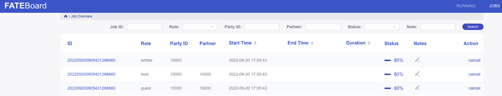

通过FATE平台提交联邦学习job，有两种方式：DSL和pipline；
DSL是通过写配置文件的方式，配置联邦学习job的各个参数；pipeline是通过写python代码的方式配置和提交job
本文使用Fate的信用样例数据，介绍通过DSL的方式进行Fate横向联邦学习的使用案例。
实验设置
fate lastest 1.9 standalone
数据集：信用数据，位置FATE/examples/data/default_credit_homo_guest/
算法：logistics regression
实验配置
上传两方数据
编辑上传数据配置文件：upload_my_homolr_guest.json
{
"file":"/data/projects/fate/examples/data/default_credit_homo_guest.csv",
"head":1,
"partition":10,
"work_mode":0,
"namespace":"homo_default_credit_guest",
"table_name":"homo_default_credit_guest"
}
|
upload_my_homolr_host.json
{
"file":"/data/projects/fate/examples/data/default_credit_homo_host_1.csv",
"head":1,
"partition":10,
"work_mode":0,
"namespace":"homo_default_credit_host",
"table_name":"homo_default_credit_host"
}
|
说明：
- file指出数据文件的位置
- namespace和table_name确定上传表的命名空间和表名。
DSL配置文件
找到dsl配置文件：/data/projects/fate/examples/dsl/v2/homo_logistic_regression/homo_lr_train_dsl.json，内容如下：
{
"components": {
"reader_0": {
"module": "Reader",
"output": {
"data": [
"data"
]
}
},
"data_transform_0": {
"module": "DataTransform",
"input": {
"data": {
"data": [
"reader_0.data"
]
}
},
"output": {
"data": [
"data"
],
"model": [
"model"
]
}
},
"scale_0": {
"module": "FeatureScale",
"input": {
"data": {
"data": [
"data_transform_0.data"
]
}
},
"output": {
"data": [
"data"
],
"model": [
"model"
]
}
},
"homo_lr_0": {
"module": "HomoLR",
"input": {
"data": {
"train_data": [
"scale_0.data"
]
}
},
"output": {
"data": [
"data"
],
"model": [
"model"
]
}
},
"evaluation_0": {
"module": "Evaluation",
"input": {
"data": {
"data": [
"homo_lr_0.data"
]
}
},
"output": {
"data": [
"data"
]
}
}
}
}
|
该文件配置了job的各个组件的类型，以及组件的输入、输出。
找到conf配置文件：/data/projects/fate/examples/dsl/v2/homo_logistic_regression/homo_lr_train_conf.json，内容（略作修改）如下：
{
"dsl_version": 2,
"initiator": {
"role": "guest",
"party_id": 10000
},
"role": {
"guest": [
10000
],
"host": [
10000
],
"arbiter": [
10000
]
},
"component_parameters": {
"common": {
"data_transform_0": {
"with_label": true,
"output_format": "dense"
},
"homo_lr_0": {
"penalty": "L2",
"tol": 1e-05,
"alpha": 0.01,
"optimizer": "sgd",
"batch_size": -1,
"learning_rate": 0.15,
"init_param": {
"init_method": "zeros"
},
"max_iter": 30,
"early_stop": "diff",
"encrypt_param": {
"method": null
},
"cv_param": {
"n_splits": 4,
"shuffle": true,
"random_seed": 33,
"need_cv": false
},
"decay": 1,
"decay_sqrt": true
},
"evaluation_0": {
"eval_type": "binary"
}
},
"role": {
"host": {
"0": {
"reader_0": {
"table": {
"name": "homo_default_credit_guest",
"namespace": "homo_default_credit_guest"
}
},
"evaluation_0": {
"need_run": false
}
}
},
"guest": {
"0": {
"reader_0": {
"table": {
"name": "homo_default_credit_host",
"namespace": "homo_default_credit_host"
}
}
}
}
}
}
}
|
该文件配置了联邦学习发起方（initiator）、参与方（role）以及每一方组件的参数（component_parameters）。
- initiator段设置了联邦发起者的角色和id
- role段设置了联邦的参与方，和参与方的角色
- job_parameters定义了工作模式（单机/集群）
- component_parameters设置了组件的参数，分为各参与方公共的参数（common），以及各参与方的独特的参数（role）
实验步骤
进入实验环境；这里使用standalone模拟两方联邦学习，所以所有操作是在同一机器上进行。
上传训练数据
(venv) [root@5af726377674 fate]
...
(venv) [root@5af726377674 fate]
...
|
使用flow table 查看上传的表信息：homo_default_credit_host
(venv) [root@5af726377674 fate]# flow table info -n homo_default_credit_host -t homo_default_credit_host
{
"data": {
"address": {
"connector_name": null,
"home": null,
"name": "homo_default_credit_host",
"namespace": "homo_default_credit_host",
"storage_type": "LMDB"
},
"count": 8000,
"enable": true,
"exist": 1,
"namespace": "homo_default_credit_host",
"origin": "upload",
"partition": 10,
"schema": {
"header": "y,x0,x1,x2,x3,x4,x5,x6,x7,x8,x9,x10,x11,x12,x13,x14,x15,x16,x17,x18,x19,x20,x21,x22",
"sid": "id"
},
"table_name": "homo_default_credit_host"
},
"retcode": 0,
"retmsg": "success"
}
|
提交训练任务
(venv) [root@5af726377674 fate]
{
"data": {
"board_url": "http://127.0.0.1:8080/index.html#/dashboard?job_id=202209200821441165650&role=guest&party_id=10000",
"code": 0,
"dsl_path": "/data/projects/fate/fateflow/jobs/202209200821441165650/job_dsl.json",
"job_id": "202209200821441165650",
"logs_directory": "/data/projects/fate/fateflow/logs/202209200821441165650",
"message": "success",
"model_info": {
"model_id": "arbiter-10000#guest-10000#host-10000#model",
"model_version": "202209200821441165650"
},
"pipeline_dsl_path": "/data/projects/fate/fateflow/jobs/202209200821441165650/pipeline_dsl.json",
"runtime_conf_on_party_path": "/data/projects/fate/fateflow/jobs/202209200821441165650/guest/10000/job_runtime_on_party_conf.json",
"runtime_conf_path": "/data/projects/fate/fateflow/jobs/202209200821441165650/job_runtime_conf.json",
"train_runtime_conf_path": "/data/projects/fate/fateflow/jobs/202209200821441165650/train_runtime_conf.json"
},
"jobId": "202209200821441165650",
"retcode": 0,
"retmsg": "success"
}
|
查看状态
在fate-board上查看训练状态：http://ip:8086

选择guest的那条记录，进入详情页。点击evaluation，选择view the outputs，查看模型效果。
loss在homo_lr_0的outputs
总结
- 使用DSL进行FATE横向联邦学习的流程包括：各方上传数据；编写DSL和CONF文件配置组件、参与方信息等；提交job。
- 为了方便测试，这里使用的standalone单机版本，所以所有操作都在同一台机器上。实际在集群上可能会有所不同，例如需要在多方机器上上传不同的数据。
- FATE的组件列表、组件输入的格式、组件的参数配置可以查看官方文档：https://fate.readthedocs.io/en/latest/federatedml_component/
- FATE关于DSL和CONF文件的配置说明可以参考：https://github.com/FederatedAI/FATE/blob/master/doc/tutorial/dsl_conf/dsl_conf_v2_setting_guide.zh.md
- flow命令指南：https://federatedai.github.io/FATE-Flow/latest/zh/document_navigation/
- flow api文档：https://federatedai.github.io/FATE-Flow/latest/zh/swagger/
Refs
- 联邦学习框架FATE使用案例记录
- 联邦学习框架FATE实践（训练/测试步骤及参数说明